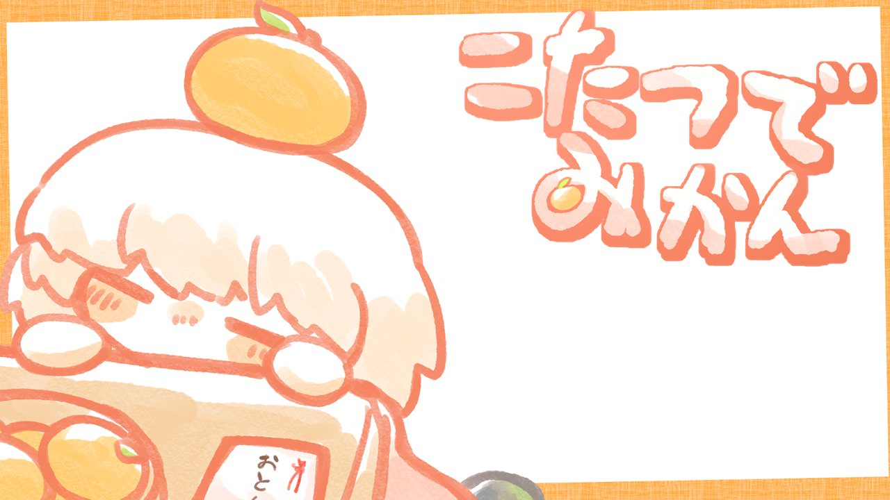

こたつでみかん

こたつに入った女の子のもとへ飛んでくる、みかん・腐ったみかん・お年玉を、とっさに「掴んで食べる」か「弾く」かを選ぶ2Dのゲームです。HAL東京のゲームジャム「Tokyo Game Survival Winter 2026」でチームで作り、ゲーム画面のプログラムと、GitHubのリポジトリの管理を担当しました。
概要
| 担当 | ゲーム画面のプログラム（ゲームの進行、アイテムの出現・判定・動き、女の子の表情と動き、UI） GitHubのリポジトリの管理 |
|---|---|
| 開発環境 | Unity 6（URP 2D）、C#、GitHub |
実装した機能
アイテムのルールをデータで決める
みかん・腐ったみかん・お年玉の違いは、プログラムではなくScriptableObjectのデータで決めています。アイテムごとに、絵と出やすさ（重み）を持たせました。さらに「掴む・食べる・弾く・見逃す」の4つの行動それぞれに、結果（点数の増減、ハートが減るか、コンボが切れるか、女の子の表情）を持たせています。ゲームの処理は、起きた行動に合う結果を取り出して反映するだけです。アイテムを増やすときや、点数と出やすさを調整するときは、プログラムを変えずにInspectorでデータを直すだけで済むようにしました。
山なりの動きを1つの部品で
飛んでくる・弾かれる・見逃して落ちる、というアイテムの動きは、物理演算を使わず、経過時間から位置を計算する1つの部品でまとめて動かしています。始点から終点へ進む割合と、山なりの高さ（4t(1−t)）を別々に計算するので、弧の高さと速さの緩急を別々に調整できます。速さの緩急は、等速と、Sine・Back・Bounceなど30種類のイージングから、Inspectorで選べます。着いたら知らせる仕組みにして、着いたあとの処理はアイテムの側に任せています。
受け付けの判定とアイテムの流れ
アイテムは「こたつへ向かう → 掴まれる・弾かれる・見逃される → 消える」という状態を持っています。キーを受け付けるのは、判定の位置から一定の距離に入っている間だけです。掴んだときは少し間を置いてから自動で食べるので、「掴んだ瞬間」と「食べた瞬間」で結果を分けられます（お年玉は掴んだ瞬間に点が入り、腐ったみかんは食べた瞬間にハートが減ります）。結果はゲームの進行を受け持つ部品にまとめて渡し、点数・コンボ・ハートの更新と、女の子の表情・手の絵の切り替え、効果音の再生を1か所で行います。ハートがなくなったら、アイテムごとの行動の回数を集計して、リザルトの画面へ渡します。